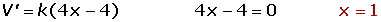

Maximum and Minimum Word Problems
1If the monetary value of a ruby is proportional to the square of its weight, split a ruby of 2 grams in two parts so that the sum of the values of the two rubies formed is the minimal possible amount.
2Find, among all the possible straight lines through the point (1, 2), a line that forms a triangle of minimum area with the positive parts of the cartesian axes.
3A buoy formed by two cones of sheet iron joined by its bases has to be constructed by two circular plates with a radius of 3 m. Calculate the dimensions of the buoy so that its volume is maximized.
4A sheet of paper must have 18 cm2 of printed text, top and bottom margins of 2 cm in height and lateral margins of 1 cm in width. Determine the dimensions of the entire sheet of paper that minimize its surface area.
5The monthly net profit, in million of dollars, of a company that manufactures buses is given by the function:
B(x)= 1.2x − (0.1x)3
where x is the number of buses manufactured in one month.
1. Determine the amount of buses needed to be manufactured each month in order to maximize profits.
2. Calculate the profit earned by producing this quantity of buses in one month.
6A garden presently has 25 trees, each producing 600 units of fruit. It is anticipated that for every additional tree planted, the production of each tree will diminish by 15 units of fruit. Calculate:
1. The current production of the garden.
2. The production of each tree after adding x more trees.
3. The production of the entire garden if x more trees are planted.
4. What amount of trees should be in the garden in order to maximize production?
7A circular sector has a perimeter of 10 m. Calculate the radius and the arc of the segment that maximizes its area.
1
If the monetary value of a ruby is proportional to the square of its weight, split a ruby of 2 grams in two parts so that the sum of the values of the two rubies formed is the minimal possible amount.

The ruby is to be divided into two equal parts of 1 gram.
2
Find, among all the possible straight lines through the point (1, 2), a line that forms a triangle of minimum area with the positive parts of the cartesian axes.

m = 2, however, in this case a triangle would not form because the coordinates of A and B coincide with the coordinates origin.
3
A buoy formed by two cones of sheet iron joined by its bases has to be constructed by two circular plates with a radius of 3 m. Calculate the dimensions of the buoy so that its volume is maximized.
4
A sheet of paper must have 18 cm2 of printed text, top and bottom margins of 2 cm in height and lateral margins of 1 cm in width. Determine the dimensions of the entire sheet of paper that minimize its surface area.


5
The monthly net profit, in million of dollars, of a company that manufactures buses is given by the function:
B(x)= 1.2x − (0.1x)3
where x is the number of buses manufactured in one month.
1. Determine the amount of buses needed to be manufactured each month in order to maximize profits.
2. Calculate the profit earned by producing this quantity of buses in one month.


6
A garden presently has 25 trees, each producing 600 units of fruit. It is anticipated that for every additional tree planted, the production of each tree will diminish by 15 units of fruit. Calculate:
1. The current production of the garden.
Current production: 25 · 600 = 15.000 fruits.
2. The production of each tree after adding x more trees.
If x more trees are planted, the production of every tree will be: 600 − 15x.
3. The production of the entire garden if x more trees are planted.
P(x) = (25 +x)(600 − 15x) = − 15x2 + 225 x + 1500
4. What amount of trees should be in the garden in order to maximize production?
P′(x) = −30 x + 225 −30 x + 225 = 0 x = 7. 5
P′′ (x) = −30 < 0
The production will be maximized if the garden has 25 + 7 = 32 or 25 + 8 = 33 trees
7
A circular sector has a perimeter of 10 m. Calculate the radius and the arc of the segment that maximizes its area.